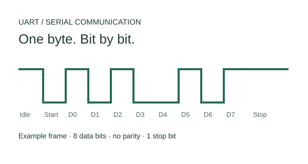

DIGITAL DESIGN & COMMUNICATIONS
UART communication system
A hardware-tested UART implementation in VHDL.
A complete UART communication system built in structural VHDL, with programmable baud-rate generation, separate transmit and receive state machines, and hardware validation on a DE-2 FPGA.

The architecture
A modular design separates the programmable baud-rate generator, transmitter, receiver, and register interface. Finite state machines control the transmit and receive paths.
Interface and error handling
Implemented parity checking, framing error detection, a register-based interface with address decoding, and interrupt generation. Clock domain management supports reliable asynchronous communication.
Hardware validation
Tested the design on a DE-2 FPGA with MAX232 level conversion for RS-232 communication across the supported baud rates.
Technical scope
Structural RTL, state-machine design, asynchronous interfaces, protocol implementation, and board-level debugging.